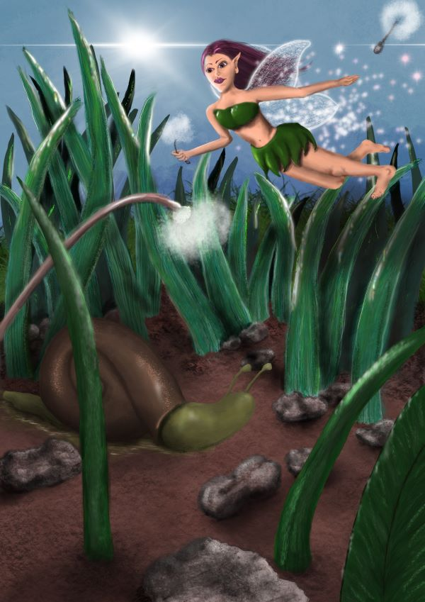

- 2022

This is my first attempt to draw a dragon on the ipad. I also wanted to have a transparent background - and use it as a somewhat border on a website. The thought is that the dragon is continuing outside the screen.

-

This is my second attempt to draw a nature-canvas on ipad. The goal was to practice the different layers, and "pencil"-features to make it more realistic.
- 2021
- 
This is my second attempt to draw on ipad overall. I now realised you can use so many layers